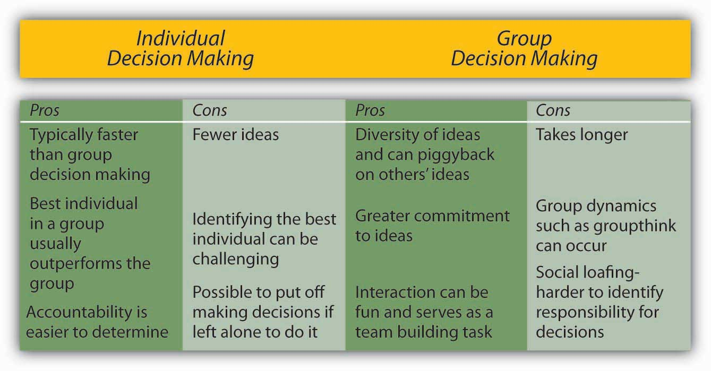
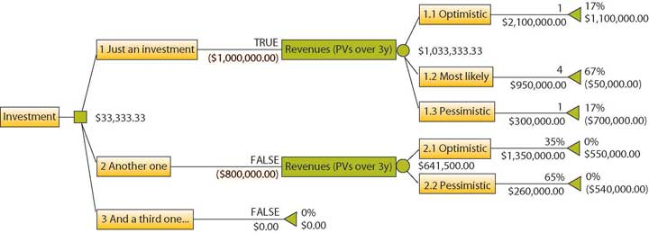

When it comes to decision making, are two heads better than one? The answer to this question depends on several factors. Group decision making has the advantages of drawing from the experiences and perspectives of a larger number of individuals. Hence, they have the potential to be more creative and lead to a more effective decision. In fact, groups may sometimes achieve results beyond what they could have done as individuals. Groups also make the task more enjoyable for members in question. Finally, when the decision is made by a group rather than a single individual, implementation of the decision will be easier because group members will be invested in the decision. If the group is diverse, better decisions may be made because different group members may have different ideas based on their background and experiences. Research shows that for top management teams, groups that debate issues and that are diverse make decisions that are more comprehensive and better for the bottom line in terms of profitability and sales.Simons, T., Pelled, L. H., & Smith, K. A. (1999). Making use of difference: Diversity, debate, decision comprehensiveness in top management teams. Academy of Management Journal, 42, 662–673.
Despite its popularity within organizations, group decision making suffers from a number of disadvantages. We know that groups rarely outperform their best member.Miner, F. C. (1984). Group versus individual decision making: An investigation of performance measures, decision strategies, and process losses/gains. Organizational Behavior and Human Performance, 33, 112–124. While groups have the potential to arrive at an effective decision, they often suffer from process losses. For example, groups may suffer from coordination problems. Anyone who has worked with a team of individuals on a project can attest to the difficulty of coordinating members’ work or even coordinating everyone’s presence in a team meeting. Furthermore, groups can suffer from social loafingThe tendency of individuals to put in less effort when working in a group context., or the tendency of some members to put forth less effort while working within a group. Groups may also suffer from groupthinkA group pressure phenomenon that increases the risk of the group making flawed decisions by allowing reductions in mental efficiency, reality testing, and moral judgment., the tendency to avoid critical evaluation of ideas the group favors. Finally, group decision making takes a longer time compared with individual decision making, given that all members need to discuss their thoughts regarding different alternatives.
Thus, whether an individual or a group decision is preferable will depend on the specifics of the situation. For example, if there is an emergency and a decision needs to be made quickly, individual decision making might be preferred. Individual decision making may also be appropriate if the individual in question has all the information needed to make the decision and if implementation problems are not expected. However, if one person does not have all the information and skills needed to make the decision, if implementing the decision will be difficult without the involvement of those who will be affected by the decision, and if time urgency is more modest, then decision making by a group may be more effective.
Figure 11.14 Advantages and Disadvantages of Different Levels of Decision Making
Have you ever been in a decision-making group that you felt was heading in the wrong direction, but you didn’t speak up and say so? If so, you have already been a victim of groupthink. Groupthink is a group pressure phenomenon that increases the risk of the group making flawed decisions by leading to reduced mental efficiency, reality testing, and moral judgment. Groupthink is characterized by eight symptoms that include:Janis, I. L. (1972). Victims of groupthink. New York: Houghton Mifflin.
Figure 11.15

Avoiding groupthink can be a matter of life or death. In January 1986, the space shuttle Challenger exploded 73 seconds after liftoff, killing all seven astronauts aboard. The decision to launch Challenger that day, despite problems with mechanical components of the vehicle and unfavorable weather conditions, is cited as an example of groupthink.
While research on groupthink has not confirmed all of the theory, groups do tend to suffer from symptoms of groupthink when they are large and when the group is cohesive because the members like each other.Esser, J. K. (1998). Alive and well after 25 years: A review of groupthink research. Organizational Behavior and Human Decision Processes, 73, 116–141; Mullen, B., Anthony, T., Salas, E., & Driskell, J. E. (1994). Group cohesiveness and quality of decision making: An integration of tests of the groupthink hypothesis. Small Group Research, 25, 189–204. The assumption is that the more frequently a group displays one or more of the eight symptoms, the worse the quality of their decisions will be.
However, if your group is cohesive, it is not necessarily doomed to engage in groupthink.
Nominal Group TechniqueA technique designed to help with group decision making by ensuring that all members participate fully. (NGT) was developed to help with group decision making by ensuring that all members participate fully. NGT is not a technique to be used at all meetings routinely. Rather, it is used to structure group meetings when members are grappling with problem solving or idea generation. It follows four steps.Delbecq, A. L., Van de Ven, A. H., & Gustafson, D. H. (1975). Group techniques for program planning: A guide to nominal group and Delphi processes. Glenview, IL: Scott, Foresman. First, each member of the group engages in a period of independently and silently writing down ideas. Second, the group goes in order around the room to gather all the ideas that were generated. This goes on until all the ideas are shared. Third, a discussion takes place around each idea and members ask for and give clarification and make evaluative statements. Finally, individuals vote for their favorite ideas by using either ranking or rating techniques. Following the four-step NGT helps to ensure that all members participate fully and avoids group decision-making problems such as groupthink.
Delphi TechniqueA group process that uses written responses to a series of questionnaires instead of physically bringing individuals together to make a decision. is unique because it is a group process using written responses to a series of questionnaires instead of physically bringing individuals together to make a decision. The first questionnaire asks individuals to respond to a broad question, such as stating the problem, outlining objectives, or proposing solutions. Each subsequent questionnaire is built from the information gathered in the previous one. The process ends when the group reaches a consensus. Facilitators can decide whether to keep responses anonymous. This process is often used to generate best practices from experts. For example, Purdue University professor Michael Campion used this process when he was editor of the research journal Personnel Psychology and wanted to determine the qualities that distinguished a good research article. Using the Delphi Technique, he was able to gather responses from hundreds of top researchers from around the world without ever having to leave his office and distill them into a checklist of criteria that he could use to evaluate articles submitted to the journal.Campion, M. A. (1993). Article review checklist: A criterion checklist for reviewing research articles in applied psychology. Personnel Psychology, 46, 705–718.
Majority ruleA decision-making rule where each member of the group is given a single vote and the option that receives the greatest number of votes is selected. refers to a decision-making rule where each member of the group is given a single vote, and the option that receives the greatest number of votes is selected. This technique has remained popular, perhaps because of its simplicity, speed, ease of use, and representational fairness. Research also supports majority rule as an effective decision-making technique.Hastie, R., & Kameda, T. (2005). The robust beauty of majority rules in group decisions. Psychological Review, 112, 494–508. However, those who did not vote in favor of the decision will be less likely to support it.
ConsensusA decision-making rule that groups may use when the goal is to gain support for an idea or plan of action. This decision-making rule is inclusive, participatory, cooperative, and democratic. is another decision-making rule that groups may use when the goal is to gain support for an idea or plan of action. While consensus tends to take longer in the first place, it may make sense when support is needed to enact the plan. The process works by discussing the issues, generating a proposal, calling for consensus, and discussing any concerns. If concerns still exist, the proposal is modified to accommodate them. These steps are repeated until consensus is reached. Thus, this decision-making rule is inclusive, participatory, cooperative, and democratic. Research shows that consensus can lead to better accuracy,Roch, S. G. (2007). Why convene rater teams: An investigation of the benfits of anticipated discussion, consensus, and rater motivation. Organizational Behavior and Human Decision Processes, 104, 14–29. and it helps members feel greater satisfaction with decisionsMohammed, S., & Ringseis, E. (2001). Cognitive diversity and consensus in group decision making: The role of inputs, processes, and outcomes. Organizational Behavior and Human Decision Processes, 85, 310–335. and to have greater acceptance. However, groups take longer with this approach and groups that cannot reach consensus become frustrated.Peterson, R. (1999). Can you have too much of a good thing? The limits of voice for improving satisfaction with leaders. Personality and Social Psychology, 25, 313–324.
Group decision support systemsInteractive computer-based systems that are able to combine communication and decision technologies to help groups make better decisions. (GDSS) are interactive computer-based systems that are able to combine communication and decision technologies to help groups make better decisions. Organizations know that having effective knowledge management systemsSystems for managing knowledge in organizations, supporting creation, capture, storage, and dissemination of information. to share information is important. Research shows that a GDSS can actually improve the output of group collaborative work through higher information sharing.Lam, S. S. K., & Schaubroeck, J. (2000). Improving group decisions by better pooling information: A comparative advantage of group decision support systems. Journal of Applied Psychology, 85, 565–573. Organizations know that having effective knowledge management systems to share information is important, and their spending reflects this reality. According to a 2002 article, businesses invested $2.7 billion into new systems in 2002 and projections were for this number to double every five years. As the popularity of these systems grows, they risk becoming counterproductive. Humans can only process so many ideas and information at one time. As virtual meetings grow larger, it is reasonable to assume that information overload can occur and good ideas will fall through the cracks, essentially recreating a problem that the GDSS was intended to solve that is to make sure every idea is heard. Another problem is the system possibly becoming too complicated. If the systems evolve to a point of uncomfortable complexity, it has recreated the problem of the bully pulpit and shyness. Those who understand the interface will control the narrative of the discussion, while those who are less savvy will only be along for the ride.Nunamaker, J. F., Jr., Dennis, A. R., Valacich, J. S., Vogel, D. R., George, J. F. (1991, July). Electronic meetings to support group work. Communications of the ACM, 34(7), 40–61. Lastly, many of these programs fail to take into account the factor of human psychology. These systems could make employees more reluctant to share information due to lack of control, lack of immediate feedback, the fear of “flaming” or harsher than normal criticism, and the desire to have original information hence more power.Babock, P. (2004, May). Shedding light on knowledge management. HR Magazine, pp. 47–50.
Decision treesDiagrams where answers to yes or no questions lead decision makers to address additional questions until they reach the end of the tree. are diagrams in which answers to yes or no questions lead decision makers to address additional questions until they reach the end of the tree. Decision trees are helpful in avoiding errors such as framing bias.Wright, G., & Goodwin, P. (2002). Eliminating a framing bias by using simple instructions to “think harder” and respondents with managerial experience: Comment on “breaking the frame.” Strategic Management Journal, 23, 1059–1067. Decision trees tend to be helpful in guiding the decision maker to a predetermined alternative and ensuring consistency of decision making—that is, every time certain conditions are present, the decision maker will follow one course of action as opposed to others if the decision is made using a decision tree.
Figure 11.17
Using decision trees can improve investment decisions by optimizing them for maximum payoff. A decision tree consists of three types of nodes. Decision nodes are commonly represented by squares. Chance nodes are represented by circles. End nodes are represented by triangles.
There are trade-offs between making decisions alone and within a group. Groups have greater diversity of experiences and ideas than individuals, but they also have potential process losses such as groupthink. Groupthink can be avoided by recognizing the eight symptoms discussed. Finally, there are a variety of tools and techniques available for helping to make more effective decisions in groups, including the Nominal Group Technique, Delphi Technique, majority rule, consensus, GDSS, and decision trees. Understanding the link between managing teams and making decisions is an important aspect of a manager’s leading function.


{kind=link}
{kind=link}